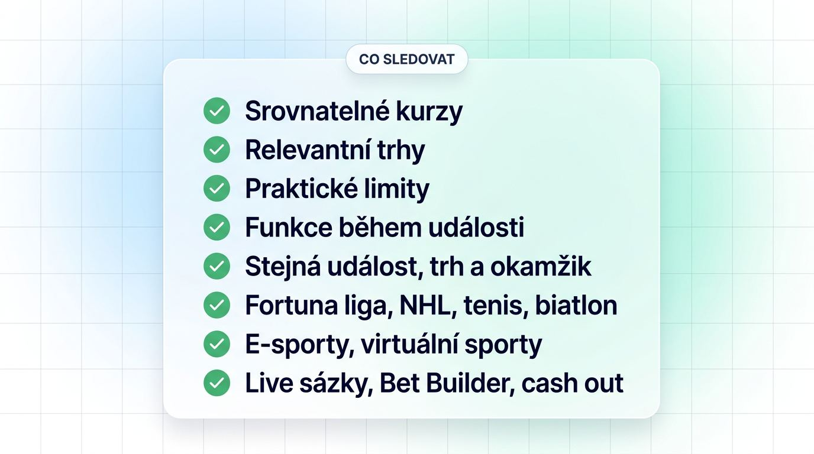
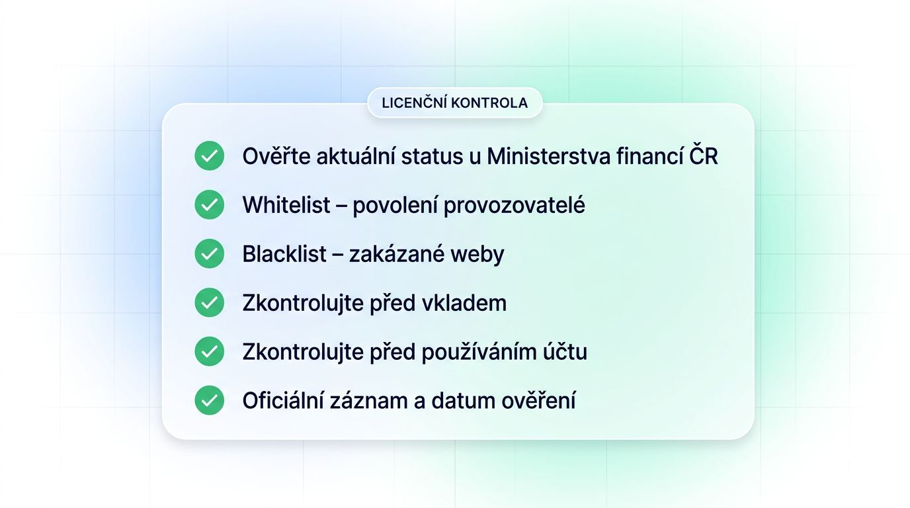
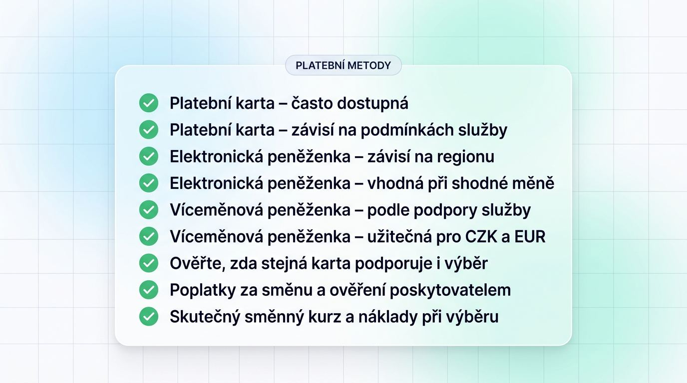

Kdy se Vám vyplatí zahraniční sázkové kanceláře

Zahraniční sázková kancelář pro Vás může být zajímavou volbou tehdy, pokud nabízí konkrétní výhodu oproti běžně dostupným službám v Česku. Může jít například o výhodnější kurzy, širší výběr trhů, vyšší limity nebo funkce, které u domácích provozovatelů nenajdete. Při srovnání je však důležité zohlednit také dostupnost služby, možnosti plateb, podmínky účtu a stabilitu provozu.
Hodnocení zahraničních sázkových kanceláří má vést k registraci až po ověření ceny sázek, dostupnosti a provozní spolehlivosti. Označení „nejlepší zahraniční“ samo o sobě neřeší, zda bude sázení u zahraničních provozovatelů vyhovovat právě Vašim soutěžím a rozpočtu.
Před samotným porovnáním si proto určete, co od sázkové kanceláře skutečně očekáváte. Hráč zaměřený na hlavní evropské fotbalové ligy bude hodnotit jiné parametry než uživatel, který vyhledává e-sporty, méně známé soutěže nebo specifické live trhy. Díky tomu lze rychleji odlišit skutečně užitečné funkce od rozsáhlé nabídky, kterou v praxi nevyužijete.
Důležitá je také pravidelnost podmínek. Jednorázově výhodnější kurz nebo atraktivní akce nemusí znamenat dlouhodobou výhodu. Při výběru proto sledujte stejné trhy v delším období, dostupné limity, rychlost zpracování sázek a případné změny podmínek účtu. Teprve opakované srovnání ukáže, zda zahraniční nabídka přináší praktickou hodnotu i při běžném používání.
Kdy může nabídka přinést vyšší hodnotu

Širší nabídka má cenu pouze tehdy, pokud zlepší soutěže, trhy a formáty sázek, které skutečně používáte. Vyšší počet položek v nabídce sám o sobě nevypovídá o lepších podmínkách.
- Srovnatelné kurzy: Kurzy sázkových kanceláří porovnávejte na stejné události, trhu a v témže okamžiku, zejména u Fortuny ligy, NHL, tenisu a biatlonu, kde čeští hráči citlivě vnímají cenu i speciální sázky.
- Relevantní trhy: Zahraniční bookmakeři mohou přidat trhy pro e-sporty, virtuální sporty nebo méně běžné formáty, pokud jsou pro Vaše sázky skutečně dostupné.
- Praktické limity: Vyšší limit má hodnotu jen tehdy, když jej provozovatel u vybraného trhu reálně přijme a podmínky účtu jej následně neomezí.
- Funkce během události: Live sázky, Bet Builder a případný cash out posuzujte podle funkčnosti na soutěžích, které sledujete.
Kdy praktické komplikace převáží výhodu

Atraktivní kurzová nabídka ztrácí hodnotu ve chvíli, kdy účet nebo platební cesta přestanou při běžném používání fungovat předvídatelně. Rizika sázení u zahraničních sázkovek proto převeďte na konkrétní náklady a omezení.
- Dlouhodobý přístup: Sázení ze zahraničí v Česku může narušit změna dostupnosti webu nebo podmínek pro české hráče.
- Komunikace a pravidla účtu: Nejasná česká lokalizace, pomalá podpora nebo přísné podmínky výběru představují náklad, který musí převážit doloženou kurzovou výhodu.
Právní přístup a kontrola licencí v Česku

Prvním filtrem pro českého rezidenta je aktuální status u Ministerstva financí České republiky, protože ovlivňuje přístup ke službě, platby i kontinuitu účtu. Česká hazardní licence představuje oprávnění působit na českém trhu, whitelist je veřejný seznam povolených provozovatelů a blacklist seznam zakázaných webů.
Legální zahraniční sázkové kanceláře je vhodné prověřovat ve dvou krocích. Nejprve zjistěte jejich status v České republice, poté ověřte licenci vydanou v zahraničí přímo u regulátora. Zákon o hazardních hrách míří především na poskytování nelegálních online hazardních her, pro uživatele se praktický dopad často projeví dostupností stránek a plateb. Pro případ české daňové administrativy si uchovávejte záznamy o vkladech, výběrech a sázkách a individuální režim konzultujte s odborníkem.
Před vkladem ověřte seznamy Ministerstva financí
Aktuální whitelist MF ČR a blacklist MF ČR představují před financováním účtu nejrychlejší kontrolu dostupnosti z Česka. Whitelist uvádí povolené provozovatele, zatímco blacklist zachycuje zakázané online služby a blokované sázkové weby.
Ministerstvo financí zveřejňuje oba seznamy na svých stránkách a jejich stav má přednost před marketingovým tvrzením provozovatele o přijímání českých zákazníků. U nelicencované sázkové kanceláře si zaznamenejte odkaz na oficiální záznam a datum ověření licence sázkové kanceláře.
- Otevřete aktuální whitelist Ministerstva financí a ověřte obchodní společnost i příslušný druh povolení.
- Zkontrolujte blacklist podle domény, případně dalších domén používaných pro stejnou službu.
- Uložte si podmínky účtu, potvrzení o vkladech, výběrech a uzavřených sázkách.
- Před vkladem zvažte, zda případné přerušení přístupu nezkomplikuje správu zůstatku nebo vyhodnocení otevřených sázek.
Důsledek záznamu na blacklistu: Český poskytovatel internetového připojení a poskytovatel platebních služeb mohou po zveřejnění záznamu uplatnit blokování nelegálních hazardních webů v patnáctidenním rámci. Může tak nastat situace, kdy web přestane být dostupný, rozpracovaná platba se nedokončí a u existujícího zůstatku či nevyhodnocené sázky budete odkázáni na postup provozovatele podle jeho podmínek.
Co napoví zahraniční licence o provozovateli
Licence vydaná v zahraničí je výchozím signálem a sama nezaručuje, že provozovatel spolehlivě vyřeší výplatu nebo spor českého hráče. Bezpečné zahraniční sázkové kanceláře poznáte podle ověřitelných pravidel pro prostředky hráčů a vyřizování stížností.
Zahraniční sázkové společnosti s licencí Curaçao a s licencí Malta Gaming Authority pracují v rozdílných regulatorních rámcích. U obou typů kanceláří s licencí ověřte platnost v registru vydávajícího regulátora a projděte dokumenty určené hráčům.
| Typ licence | Ověření u regulátora | Zveřejněná pravidla nakládání s prostředky | Viditelnost stížnostního procesu | Nezávislé řešení sporů |
|---|---|---|---|---|
| Licence Curaçao | Vyhledejte držitele a číslo licence v oficiálním registru | Ověřte, zda podmínky popisují ochranu či oddělení prostředků hráčů | Posuďte, zda služba uvádí lhůty a kontaktní postup | Zjistěte, zda licence umožňuje externí podání stížnosti |
| Malta Gaming Authority | Ověřte provozovatele v registru regulátora | Hledejte pravidla pro zacházení s penězi zákazníků | Zkontrolujte postup eskalace reklamace | Ověřte dostupnost nezávislé instituce pro spor |
U sázkových kanceláří posuzujte dohledatelnou historii stížností a konkrétní pravidla správy prostředků. Obecné tvrzení o bezpečnosti neposkytuje stejnou informaci jako dokumentace regulátora a provozovatele.
Porovnání kurzů, trhů a sázkových funkcí
Při hodnocení sázkového produktu porovnejte shodné kurzy, hloubku trhu a funkčnost při reálném použití. Zahraniční online sázkové kanceláře lze hodnotit jen na základě stejné události, stejného trhu a stejného času odběru.
Hodnota kurzů na oblíbených soutěžích
Marže sázkové kanceláře vyjadřuje procentní podíl, který provozovatel zabudovává do daného trhu. Nižší srovnatelná marže může dlouhodobě zlepšit hodnotu sázení, nezaručuje však návratnost jednotlivých sázek.
To, která zahraniční sázková kancelář má nejlepší kurzy, zjistíte z opakovaného, datovaného vzorku stejných předzápasových trhů z Fortuny ligy, NHL, tenisu a biatlonu.
| Cenový model | Srovnatelný trh | Marže | Čas odběru | Hodnoticí kritérium |
|---|---|---|---|---|
| Nízká marže | Stejný předzápasový trh | Výpočet ze všech možných výsledků | Shodný čas u všech služeb | Nižší opakovaně naměřená marže |
| Rekreační model | Stejný předzápasový trh | Výpočet ze všech možných výsledků | Shodný čas u všech služeb | Cena posouzená spolu s limity a podmínkami |
Malý rozdíl v marži má pro hráče význam až při opakování na trzích, které pravidelně využívají. Do výsledku proto započítejte i náklady platební cesty.
Šířka nabídky a použitelnost live sázek
Vypsaný trh nebo funkce mají hodnotu pouze tehdy, když zůstávají stabilní během soutěže, na kterou chcete sázet. U živých sázek rozhoduje dostupnost v okamžiku podání tiketu.
- Předzápasové trhy: Ověřte rozsah pro konkrétní ligu a formát, například počet možností na hráčské statistiky v NHL nebo setové sázky v tenisu.
- Live sázky: Sledujte, zda služba přijímá sázky bez častého přeceňování a zda pokrývá Vámi vybrané události.
- Bet Builder a cash out: Zjistěte jejich dostupnost přímo u relevantních zápasů, protože jejich nabídka se může mezi soutěžemi lišit.
- Přenosy a mobil: Mobilní aplikace sázkové kanceláře má přínos, pokud umožní rychlé podání sázky, přehled tiketu a stabilní přístup během živé události.
- E-sporty a virtuální sporty: Rostoucí zájem neznamená jednotnou dostupnost ani stejný právní režim, proto je posuzujte odděleně od přístupu na český a slovenský sázkový trh.
Platby, měny a výběry z Česka
Měna účtu a platební cesta určují skutečné náklady vkladu i výběru pro českého rezidenta. Účet v českých korunách může snížit počet převodů, zatímco účet v eurech přidává kurzové rozdíly při vkladu i výběru; malé rozdíly se při častém sázení načítají. Náklad na směnu představuje kurzový rozdíl nebo poplatek, který sníží hodnotu převáděných peněz.
Vklad a výběr peněz posuzujte jako jeden proces. Samotná dostupnost vkladu neříká, zda stejná metoda umožní výplatu výher za přijatelný čas a náklad. Kryptoměna může být jednou z platebních možností, její dostupnost a pravidla však ověřujte zvlášť pro český účet. U víceměnové peněženky ověřte také možnost výplaty na účet vedený na Vaše jméno.
Platební metody vybírejte podle celkových nákladů

Nejlevnější vklad nemusí být nejpraktičtější cestou k výběru peněz. Platební metody sázkových kanceláří porovnávejte podle poplatků, směny, času převodu a kompatibility s měnou účtu.
Globálně uváděná nabídka metod se může pro české uživatele zúžit regionálními omezeními. Banka nebo poskytovatel plateb také může provést vlastní kontrolu transakce, která ovlivní rychlost výběru peněz i kontinuitu vkladu.
| Platební cesta | Vklad | Výběr | Měnová kompatibilita | Co ověřit před použitím |
|---|---|---|---|---|
| Bankovní převod | Obvykle možný podle účtu | Obvykle možný podle podmínek | CZK nebo EUR podle účtu | Poplatek, čas připsání a případná bankovní kontrola |
| Platební karta | Často dostupná | Závisí na podmínkách služby | Podle měny karty a účtu | Zda stejná karta podporuje i výběr |
| Elektronická peněženka | Závisí na regionu | Závisí na regionu | Vhodná při shodné měně | Poplatky za směnu a ověření poskytovatelem |
| Víceměnová peněženka | Podle podpory služby | Podle podpory služby | Užitečná pro CZK a EUR | Skutečný směnný kurz a náklady při výběru |
KYC a spolehlivost výplat ověřte před prvním vkladem
Po výběru platební cesty ověřte podmínky, které rozhodují o tom, zda přes ni projde i výplata výher. KYC ověření, tedy ověření identity hráče, může při včasném splnění omezit zdržení před výběrem.
- Zjistěte, zda sázková kancelář vyžaduje doklady už při registraci u zahraniční sázkové kanceláře, nebo až při prvním výběru.
- Ověřte přijímání dokladů českých rezidentů a případné dodatečné kontroly zdroje prostředků.
- Oddělte dobu zpracování žádosti provozovatelem od času platební sítě.
- Posuzujte zveřejněné podmínky spolu s datovanými testy výplat a dokumentovanými zkušenostmi.
- Hledejte důvody zdržení, zejména neúplné KYC, nesoulad platební metody a ověřování před výplatou.
Bonusy a sázky zdarma bez marketingových zkratek
Výše uvítací nabídky neukazuje její dosažitelnou hodnotu, dokud neprověříte protočení, kurz, lhůtu, měnu, výběr a dostupnost z Česka. Požadavek na protočení určuje objem sázek, který musíte uzavřít před výběrem bonusových prostředků. Bonus za registraci, vstupní bonus i bonus bez vkladu proto hodnoťte podle podmínek.
Jak číst podmínky uvítací nabídky
Vkladový bonus nebo sázka zdarma fungují jen tehdy, když odpovídají Vašemu plánovanému vkladu, obvyklým kurzům a času na splnění pravidel. Podmínky sázkových bonusů čtěte v pořadí, v němž ovlivní kvalifikaci, použití a výběr.
- Ověřte kvalifikační vklad, podporovanou platební metodu a případné omezení české IP adresy či lokality.
- Zjistěte, zda bonus připadne jako peněžní kredit, sázka zdarma nebo jiná forma, a na které sázky jej lze použít.
- Prověřte požadavek na protočení, minimální kurz a časový limit, protože určují, zda nabídku stihnete dokončit.
- Zkontrolujte maximální výběr z bonusových prostředků a pravidla pro sázky zaměřené na systematické využívání kurzu.
- Podmínky porovnávejte podle datovaného zdroje, protože provozovatel je může změnit.
Skutečná hodnota bonusu po omezeních
Vyšší nominální bonus nemusí přinést lepší výsledek, pokud jej dokončíte přes nevýhodné kurzy, směnu měny nebo omezený výběr. Hodnotu počítejte až po zohlednění ceny sázení a nákladů od vkladu po výplatu.
| Kategorie podmínky | Dopad na efektivní hodnotu | Co má při porovnání přednost |
|---|---|---|
| Protočení a minimální kurz | Určují potřebný objem a způsob sázení | Splnitelnost při Vašem běžném stylu sázek |
| Marže kurzů | Snižuje hodnotu při opakovaném plnění | Srovnatelná cena relevantních trhů |
| Směna měny | Může snížit hodnotu vkladu i výběru | Celkový náklad převodu |
| Maximální výplata | Omezuje částku, kterou lze vybrat | Výběrový strop před reklamní částkou |
| Omezení účtu | Mohou zkrátit možnost bonus využít | Jasně zveřejněná pravidla pro hráče |
Stabilita účtu a použitelnost pro české sázkaře
Účet musí zůstat použitelný i po registraci. U zahraničních sázkovek proto po kurzech, platbách a bonusech posuzujte dokumentované limity, přístup k prostředkům, podporu a práci s daty.
Limity, uzavírání účtů a dlouhodobá dostupnost
Zveřejněné limity sázek, stropy výplat a pravidla uzavření účtu mohou rozhodnout o tom, zda Vám sázková kancelář poslouží dlouhodobě. Rizika sázení u zahraničních sázkovek posuzujte podle podmínek a nezávisle doložené praxe.
- Limity sázek: Zjistěte, zda podmínky popisují individuální omezení trhu nebo účtu.
- Maximální výplaty: Ověřte stropy pro jednu sázku, událost i časové období výplaty výher.
- Omezení účtu: Rozlišujte zveřejněná oprávnění provozovatele od jednotlivě doložených případů.
- Uzavření účtu: Hledejte postup pro vypořádání zůstatku a otevřených sázek.
- Stabilita značky: Změny domén, rebranding a regulatorní zásahy mohou ovlivnit budoucí dostupnost účtu.
Jazyk, podpora a práce s osobními údaji
Srozumitelná česká komunikace Vám pomůže správně vyložit pravidla KYC, bonusu i výplaty. Českou lokalizaci hodnotíte odděleně pro web, mobilní prostředí, podmínky a zákaznickou podporu v češtině.
- Web v češtině: Kontrolujte přesnost překladu tlačítek, platebních informací a pravidel účtu.
- Mobilní prostředí: Mobilní aplikace sázkové kanceláře má být v české verzi stejně přehledná jako web, včetně správy tiketu a výběru.
- Podmínky: Ověřte, zda české znění odpovídá závazné verzi a zda uvádí postup reklamace.
- Podpora: Posuďte kanály, srozumitelnost odpovědi a datovaný test reakce na konkrétní dotaz.
- Osobní údaje: Hledejte dokumentaci GDPR, popis zpracování dat, šifrování spojení a dvoufázové ověření, je-li dostupné.
Nástroje odpovědného sázení k ověření
Nástroje odpovědného sázení mají být dostupné dříve, než na účet vložíte peníze. Sebevyloučení ze hry je opatření, které podle podmínek provozovatele zabrání přístupu k hazardní hře na určené období.
- Ověřte limity odpovědného hraní pro vklady, prohry a čas.
- Zjistěte dostupnost přestávky ve hře a sebeomezujících opatření přímo v účtu.
- Prověřte, zda lze sebevyloučení aktivovat bez zásahu podpory a jaké podmínky platí pro jeho ukončení.
- Zkontrolujte kontrolu věku a identity hráče.
- U českých služeb ověřte návaznost na Rejstřík vyloučených osob, u zahraničních provozovatelů konkrétní rozsah jejich vlastních nástrojů ochrany hráčů.
Ministerstvo financí varuje před riziky účasti na hazardních hrách, proto si předem stanovte limity, které dokážete přímo aktivovat.
Jak probíhá testování srovnání v Česku
Závěry musí odpovídat přístupu a používání účtu z České republiky. Při hodnocení zahraničních sázkových kanceláří oddělujeme přímé testování od ověření v oficiálních zdrojích, dokumentaci a nezávisle doložených podkladech.
- Testujeme přístup z české IP adresy a zaznamenáváme datum kontroly.
- Ověřujeme status na whitelistech a blacklistech MF ČR.
- Odebíráme srovnatelné kurzy ve stejný čas, počítáme marži a používáme trhy z Fortuna ligy, NHL, tenisu a biatlonu.
- Testujeme nebo ověřujeme platební cesty, měny účtu, poplatky, podmínky výběru a dokumentovanou výplatu.
- Prověřujeme KYC, přijetí českých dokladů, podporu, lokalizaci, mobilní použitelnost a nástroje odpovědného sázení.
- Transparentně vážíme přístup, sázkovou hodnotu, použitelnost, platební spolehlivost a stabilitu účtu.
- U kurzů, plateb, výplat, bonusů, přístupu a ověření licence sázkové kanceláře uvádíme zdroj důkazu i datum.
Časté dotazy k zahraničním sázkovým kancelářím v Česku
Následující odpovědi řeší úzké otázky českého trhu, které hlavní srovnávací kritéria nepokrývají samostatně.
Jak často Ministerstvo financí aktualizuje blacklist hazardních webů?
Blacklist MF ČR se neaktualizuje v pevných intervalech; rozhoduje jeho aktuální stav. Stav ověřte přímo před vkladem nebo používáním účtu na stránkách Ministerstva financí.
Jsou prediction markety v Česku považovány za hazardní služby?
Mohou být posuzovány jako hazardní služby podle povahy nabídky. Aktuální status konkrétní platformy ověřte u MF ČR, protože blacklist zahrnuje i nové typy služeb.
Znamená slovenská verze sázkového webu automaticky legální přístup z Česka?
Ne. Přístup na český a slovenský sázkový trh se řídí samostatně a slovenská verze nepotvrzuje českou hazardní licenci ani provoz s českou licencí.
Mohou čeští rezidenti používat kryptoměny u zahraniční sázkové kanceláře?
Mohou pouze podle podmínek provozovatele a poskytovatele platby. Kryptoměna nepotvrzuje českou dostupnost ani neruší transakční kontroly bank a platebních služeb.
Platí patnáctidenní lhůta také pro nově zařazené zrcadlové domény?
Ověřte konkrétní zápis a datum jeho zveřejnění na seznamu MF ČR. Pro blokování nelegálních hazardních webů rozhoduje aktuální stav dané domény na oficiální stránce.